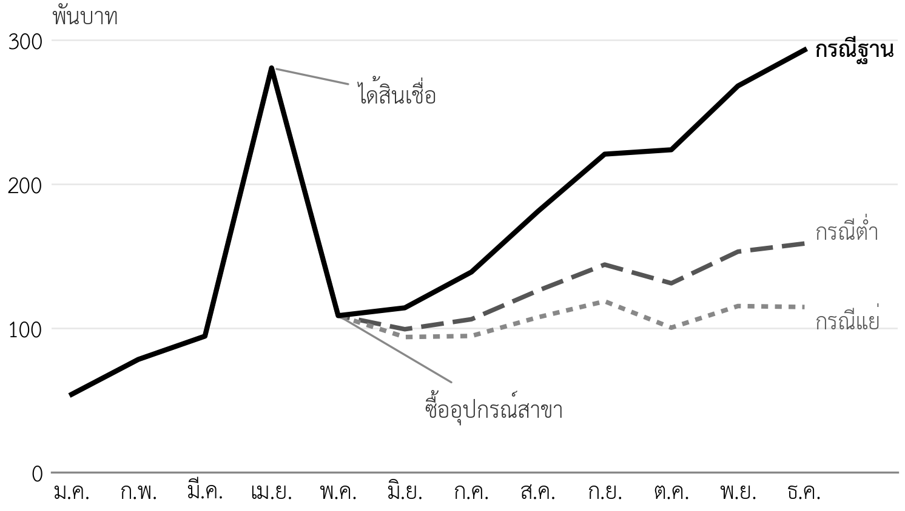
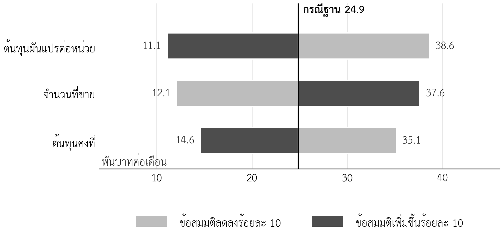

- จัดทำประมาณการกำไรขาดทุนรายเดือนและรายปีจากตัวเลขในบทก่อนหน้าได้
- จัดทำประมาณการกระแสเงินสดรายเดือน 12 เดือน และอธิบายความต่างระหว่างกำไรกับเงินสดได้
- ตรวจความสอดคล้องของงบด้วยงบแสดงฐานะการเงินอย่างง่าย และคำนวณระยะคืนทุนส่วนเพิ่มของแผนขยายได้
- วิเคราะห์ความอ่อนไหวและกรณีศึกษาสถานการณ์ และระบุตัวแปรที่มีผลมากที่สุดได้
- คำนวณความสามารถชำระหนี้ในกรณีฐาน กรณีต่ำ และกรณีแย่ได้
- จัดทำทะเบียนความเสี่ยงพร้อมสัญญาณเตือนและแผนสำรองได้
- จัดทำใบงานที่ 6 ส่วนที่ 2 ของกลุ่มได้
ความนำ
บทที่ 10 ตอบว่าธุรกิจต้องขายเท่าใดจึงไม่ขาดทุน โดยใช้ปีปกติที่ทุกอย่างดำเนินงานครบแล้ว แต่ธุรกิจไม่ได้เริ่มที่ปีปกติ ในปีแรกของแผนขยาย ร้านต้องจ่ายเงินลงทุนก่อนมีรายได้ จ่ายค่าจ้างพนักงานครัวกลางก่อนสาขาใหม่เปิด และรอให้สาขาใหม่ไต่ระดับ ช่วงนี้เป็นช่วงที่ธุรกิจจำนวนมากล้มเหลว ไม่ใช่เพราะขาดทุนทั้งปี แต่เพราะเงินสดหมดก่อนถึงเดือนที่มีกำไร
บทนี้จึงทำสามเรื่องต่อจากบทที่ 10 เรื่องแรก ประมาณการกำไรขาดทุนและกระแสเงินสดเป็นรายเดือน เพื่อดูว่าเงินสดต่ำที่สุดเมื่อใด เรื่องที่สอง ทดสอบว่าถ้าสิ่งที่คาดไว้ไม่เป็นไปตามแผน ผลจะเป็นอย่างไร เรื่องที่สาม เตรียมแผนสำรองไว้ล่วงหน้า บทนี้จะตอบคำถามที่เจ้าหน้าที่สินเชื่อถามไว้ในบทที่ 10 ด้วยว่า ในกรณีต่ำ ร้านยังผ่อนชำระได้หรือไม่
11.1 สามคำถามที่ประมาณการทางการเงินต้องตอบ
ประมาณการทางการเงิน (financial projection) คือชุดของงบการเงินที่คาดการณ์ไปข้างหน้าจากข้อสมมติในแผน สำหรับแผนธุรกิจของรายวิชานี้ ประมาณการทางการเงินควรตอบสามคำถาม แต่ละคำถามใช้เครื่องมือต่างกัน และไม่มีเครื่องมือใดตอบแทนเครื่องมืออื่นได้ (ตารางที่ 11.1)
ตารางที่ 11.1 คำถามของประมาณการทางการเงินและเครื่องมือที่ใช้ตอบ
| คำถาม | เครื่องมือ | ผู้อ่านที่สนใจมากที่สุด |
|---|---|---|
| ธุรกิจมีกำไรหรือไม่ และเท่าใด | ประมาณการกำไรขาดทุน | เจ้าของ ผู้ลงทุน |
| ธุรกิจมีเงินสดพอจ่ายทุกเดือนหรือไม่ | ประมาณการกระแสเงินสด | ธนาคาร เจ้าของ |
| ถ้าไม่เป็นไปตามแผน จะเกิดอะไรขึ้น | ความอ่อนไหว กรณีศึกษาสถานการณ์ ทะเบียนความเสี่ยง | ทุกคน |
ข้อสมมติทั้งหมดของประมาณการในบทนี้มาจากบทที่ 7 ถึงบทที่ 10 มีข้อสมมติใหม่เพียงสามข้อ คือ ร้านมีเงินสดต้นปี 2570 จำนวน 30,000 บาท เงินของคุณตั้มและสินเชื่อเข้ามาในเดือนเมษายน 2570 และภาษีมูลค่าเพิ่มของแต่ละเดือนนำส่งในเดือนถัดไป
11.2 ประมาณการกำไรขาดทุน
11.2.1 โครงของงบกำไรขาดทุน
งบกำไรขาดทุน (income statement) แสดงรายได้หักค่าใช้จ่ายของช่วงเวลาหนึ่ง สำหรับธุรกิจขนาดเล็ก โครงที่ใช้ได้ดีที่สุดคือโครงที่แยกต้นทุนผันแปรออกก่อน เพราะเชื่อมกับจุดคุ้มทุนในบทที่ 10 โดยตรง คือ รายได้สุทธิ หักต้นทุนผันแปร ได้ส่วนเกินรวม หักต้นทุนคงที่ที่เป็นเงินสด ค่าใช้จ่ายครั้งเดียว ค่าเสื่อมราคา และดอกเบี้ย ได้กำไรก่อนภาษี ตารางที่ 11.2 แสดงงบกำไรขาดทุนของปี 2570 ซึ่งเป็นปีที่ขยาย และปี 2571 ซึ่งเป็นปีปกติ
ตารางที่ 11.2 ประมาณการกำไรขาดทุนปี 2570 และ 2571 (บาท กรณีศึกษาสมมติ)
| รายการ | ปี 2570 (ปีที่ขยาย) | ปี 2571 (ปีปกติ) |
|---|---|---|
| ยอดขายรวมภาษีมูลค่าเพิ่ม | 2,479,277 | 3,407,040 |
| รายได้สุทธิ | 2,350,301 | 3,184,150 |
| หัก ต้นทุนผันแปร | 1,213,693 | 1,652,414 |
| ส่วนเกินรวม | 1,136,608 | 1,531,736 |
| หัก ต้นทุนคงที่ที่เป็นเงินสด (รวมค่าตอบแทนเจ้าของ) | 869,100 | 1,137,600 |
| หัก ค่าใช้จ่ายครั้งเดียว (การตลาดช่วงเปิด จดทะเบียน) | 25,000 | – |
| หัก ค่าเสื่อมราคา | 45,267 | 77,600 |
| หัก ดอกเบี้ย | 14,267 | 18,132 |
| กำไรก่อนภาษีเงินได้ | 182,974 | 298,404 |
กำไรปี 2571 เท่ากับกำไรต่อเดือนในบทที่ 10 คูณ 12 ซึ่งเป็นการตรวจว่าตัวเลขทั้งสองบทสอดคล้องกัน ส่วนกำไรปี 2570 ต่ำกว่า เพราะสาขาใหม่ดำเนินงานเพียงเจ็ดเดือน ต้องจ่ายต้นทุนครัวกลางก่อนเปิดสาขา และมีค่าใช้จ่ายครั้งเดียว
11.2.2 ภาษีเงินได้
ร้านในระยะที่ 1 เป็นบุคคลธรรมดา ภาษีเงินได้จึงคำนวณจากเงินได้ของคุณตั้มทั้งปี และมีข้อที่ต้องระวังหนึ่งข้อ ค่าตอบแทนเจ้าของที่บทที่ 10 นับเป็นต้นทุนเพื่อวางแผน ไม่ใช่ค่าใช้จ่ายทางภาษีของบุคคลธรรมดา เพราะเป็นเงินที่เจ้าของจ่ายให้ตนเอง เงินได้ที่ใช้คำนวณภาษีจึงเท่ากับกำไรบวกค่าตอบแทนเจ้าของ สำนักงานบัญชีประมาณภาษีเงินได้ของปี 2570 ไว้ประมาณ 14,000 บาท และปี 2571 ประมาณ 25,000 บาท ทั้งนี้เป็นข้อสมมติที่ใช้ค่าลดหย่อนส่วนตัวเพียงรายการเดียว ภาษีของแต่ละปีชำระในปีถัดไป จึงปรากฏในกระแสเงินสดของปีถัดไป
11.3 ประมาณการกระแสเงินสด
11.3.1 กำไรไม่เท่ากับเงินสด
กระแสเงินสด (cash flow) คือเงินสดที่รับเข้าและจ่ายออกจริงในแต่ละช่วง กำไรกับเงินสดต่างกันด้วยเหตุผลหลักสี่ข้อ ข้อแรก เงินลงทุนเป็นเงินสดจ่ายออกทั้งก้อนในเดือนที่ซื้อ แต่เป็นค่าใช้จ่ายในงบกำไรขาดทุนผ่านค่าเสื่อมราคาทีละเดือน ข้อที่สอง เงินกู้และเงินของเจ้าของเป็นเงินสดรับเข้า แต่ไม่ใช่รายได้ ข้อที่สาม เงินต้นของค่างวดเป็นเงินสดจ่ายออก แต่ไม่ใช่ค่าใช้จ่าย ข้อที่สี่ ภาษีมูลค่าเพิ่มที่เก็บจากลูกค้าเป็นเงินสดที่อยู่ในมือชั่วคราว ก่อนนำส่งในเดือนถัดไป ธุรกิจที่ดูเฉพาะกำไรจึงอาจขาดเงินสดได้ แม้งบกำไรขาดทุนแสดงว่ามีกำไร
11.3.2 กระแสเงินสดรายเดือนปี 2570
ตารางที่ 11.3 แสดงยอดขาย กำไร และเงินสดปลายเดือนของปี 2570 ทุกเดือน ตัวเลขชุดนี้คือหัวใจของแผนขยาย เพราะแสดงช่วงที่ธุรกิจเปราะบางที่สุด
ตารางที่ 11.3 ประมาณการรายเดือนปี 2570 กรณีฐาน (บาท กรณีศึกษาสมมติ)
| เดือน | ยอดขายรวมภาษี | รายได้สุทธิ | กำไร | เงินสดปลายเดือน | เหตุการณ์ |
|---|---|---|---|---|---|
| ม.ค. | 120,120 | 120,120 | 24,202 | 54,202 | |
| ก.พ. | 120,120 | 120,120 | 24,202 | 78,404 | |
| มี.ค. | 103,740 | 103,740 | 16,129 | 94,533 | |
| เม.ย. | 70,980 | 70,980 | −14,017 | 280,516 | ได้สินเชื่อ จ่ายครัวกลาง |
| พ.ค. | 92,820 | 92,820 | −17,628 | 108,752 | ซื้ออุปกรณ์ เริ่มผ่อน |
| มิ.ย. | 235,435 | 220,033 | −12,269 | 114,189 | เปิดสาขาใหม่ |
| ก.ค. | 273,874 | 255,957 | 20,038 | 139,021 | |
| ส.ค. | 312,312 | 291,880 | 37,345 | 181,133 | ขายเต็มที่ |
| ก.ย. | 312,312 | 291,880 | 37,372 | 220,731 | |
| ต.ค. | 241,332 | 225,544 | 5,487 | 223,774 | ปิดภาคเรียน |
| พ.ย. | 312,312 | 291,880 | 37,425 | 268,015 | |
| ธ.ค. | 283,920 | 265,346 | 24,687 | 292,991 | |
| รวม | 2,479,277 | 2,350,301 | 182,974 |
ตารางนี้ให้ข้อสังเกตสามข้อ ข้อแรก ร้านขาดทุนติดต่อกันสามเดือน ตั้งแต่เมษายนถึงมิถุนายน เพราะต้นทุนของครัวกลางและการเปิดสาขาเกิดก่อนรายได้ รูปแบบนี้พบได้ในแผนขยายเกือบทุกแผน และต้องเขียนไว้ในแผน ไม่ใช่ซ่อนไว้ในตัวเลขรายปี ข้อที่สอง เงินสดไม่ติดลบเลยตลอดปี เพราะแผนกันเงินทุนหมุนเวียนไว้ 50,000 บาท และสาขาเดิมยังสร้างเงินสดได้ ข้อที่สาม เดือนที่เงินสดต่ำที่สุดหลังการลงทุนคือพฤษภาคม ซึ่งเป็นเดือนที่จ่ายเงินลงทุนส่วนที่สองและยังไม่มีรายได้จากสาขาใหม่ ภาพที่ 11.1 แสดงเงินสดปลายเดือนของกรณีฐานเทียบกับกรณีต่ำและกรณีแย่ ซึ่งจะอธิบายในหัวข้อ 11.5

11.3.3 สรุปกระแสเงินสดทั้งปี
ตารางรายเดือนตอบว่าเงินสดพอหรือไม่ ส่วนตารางสรุปทั้งปีตอบว่าเงินสดมาจากไหนและไปที่ไหน ตารางที่ 11.4 แยกเงินสดปี 2570 ตามแหล่งที่มาและการใช้ไป ตัวเลขต้องกระทบยอดกันพอดี คือเงินสดต้นปีบวกเงินรับหักเงินจ่ายเท่ากับเงินสดปลายปี ถ้าไม่ตรงกัน แสดงว่ามีรายการตกหล่นหรือนับซ้ำ
ตารางที่ 11.4 สรุปกระแสเงินสดปี 2570 กรณีฐาน (บาท กรณีศึกษาสมมติ)
| รายการ | จำนวนเงิน |
|---|---|
| เงินสดต้นปี | 30,000 |
| บวก รับจากการขาย (รวมภาษีมูลค่าเพิ่ม) | 2,479,277 |
| บวก เงินของเจ้าของและสินเชื่อ | 450,000 |
| หัก จ่ายต้นทุนผันแปร | 1,213,693 |
| หัก จ่ายต้นทุนคงที่ (รวมค่าตอบแทนเจ้าของ) | 869,100 |
| หัก ค่าใช้จ่ายครั้งเดียว | 25,000 |
| หัก นำส่งภาษีมูลค่าเพิ่ม (มิถุนายนถึงพฤศจิกายน) | 110,403 |
| หัก ค่างวดเงินกู้ 8 งวด | 48,091 |
| หัก ลงทุนอุปกรณ์และมัดจำ | 400,000 |
| เงินสดปลายปี | 292,991 |
เงินสดปลายปีไม่ใช่เงินที่ใช้ได้ทั้งหมด ภาษีมูลค่าเพิ่มของเดือนธันวาคมประมาณ 18,574 บาทต้องนำส่งในเดือนมกราคม 2571 และภาษีเงินได้ของปี 2570 ต้องชำระในปี 2571 ด้วย แผนที่ดีควรระบุเงินที่ผูกพันไว้แล้วเหล่านี้ เพื่อไม่ให้ผู้ประกอบการนำไปใช้ลงทุนต่อ
11.3.4 งบแสดงฐานะการเงินอย่างง่าย
งบแสดงฐานะการเงิน (balance sheet) แสดงว่า ณ วันหนึ่ง ธุรกิจมีสินทรัพย์อะไร และสินทรัพย์นั้นมาจากหนี้สินหรือจากเงินของเจ้าของ งบนี้มีประโยชน์ในแผนธุรกิจเพราะเป็นการตรวจความถูกต้องของงบอีกสองงบ ถ้างบกำไรขาดทุนและกระแสเงินสดถูกต้อง สินทรัพย์รวมจะเท่ากับหนี้สินรวมกับส่วนของเจ้าของพอดี ถ้าไม่เท่ากัน แสดงว่ามีรายการที่ลงผิด ตารางที่ 11.5 แสดงงบอย่างง่ายของส่วนที่เกี่ยวกับแผนขยาย ณ สิ้นปี 2570 โดยไม่รวมอุปกรณ์เดิมของร้านซึ่งใช้มาหลายปีแล้ว
ตารางที่ 11.5 งบแสดงฐานะการเงินอย่างง่าย ณ 31 ธันวาคม 2570 (บาท กรณีศึกษาสมมติ)
| สินทรัพย์ | จำนวนเงิน | หนี้สินและส่วนของเจ้าของ | จำนวนเงิน |
|---|---|---|---|
| เงินสด | 292,991 | เงินกู้คงเหลือ | 266,176 |
| เงินมัดจำค่าเช่า | 12,000 | ภาษีมูลค่าเพิ่มค้างนำส่ง | 18,574 |
| อุปกรณ์สุทธิ (388,000 หักค่าเสื่อม 45,267) | 342,733 | ส่วนของเจ้าของ (เงินสดต้นปี 30,000 เงินลงทุน 150,000 กำไรปี 2570 182,974) | 362,974 |
| รวมสินทรัพย์ | 647,724 | รวมหนี้สินและส่วนของเจ้าของ | 647,724 |
ทั้งสองด้านเท่ากันที่ 647,724 บาท ซึ่งยืนยันว่าตัวเลขในตารางที่ 11.2 และตารางที่ 11.4 สอดคล้องกัน เงินกู้คงเหลือเท่ากับ 300,000 บาทหักเงินต้นที่จ่ายไปแล้ว คือค่างวด 48,091 บาทหักดอกเบี้ย 14,267 บาท ส่วนภาษีเงินได้ของคุณตั้มเป็นภาษีของบุคคลธรรมดา จึงไม่แสดงในงบของธุรกิจ แต่ต้องกันเงินไว้จ่ายในปี 2571 ตามที่กล่าวในหัวข้อ 11.3.3
11.3.5 ข้อผิดพลาดที่พบบ่อยในกระแสเงินสด
กระแสเงินสดเป็นส่วนของแผนที่นิสิตทำผิดบ่อยที่สุด เพราะต้องแยกให้ได้ว่ารายการใดเป็นเงินสดและรายการใดเป็นเพียงตัวเลขทางบัญชี ตารางที่ 11.6 รวบรวมข้อผิดพลาดที่พบบ่อยพร้อมวิธีตรวจ ซึ่งใช้เป็นรายการตรวจก่อนส่งใบงานที่ 6 ได้
ตารางที่ 11.6 ข้อผิดพลาดที่พบบ่อยในประมาณการกระแสเงินสด
| ข้อผิดพลาด | วิธีตรวจ | วิธีแก้ |
|---|---|---|
| ลงค่าเสื่อมราคาเป็นเงินสดจ่าย | ค่าเสื่อมปรากฏในกระแสเงินสด | ลบออก เงินสดจ่ายครั้งเดียวในเดือนที่ซื้อ |
| ลงเงินกู้เป็นรายได้ | กำไรเดือนที่ได้เงินกู้สูงผิดปกติ | ย้ายไปเป็นเงินสดรับจากการจัดหาเงิน |
| ไม่มีเงินต้นของค่างวด | กระแสเงินสดมีแต่ดอกเบี้ย | ใส่ค่างวดเต็มจำนวน |
| ไม่มีเงินทุนหมุนเวียน | เงินสดติดลบในเดือนแรก ๆ | กันเงินสดไว้อย่างน้อยเท่าต้นทุนคงที่หนึ่งถึงสองเดือน |
| ใช้ยอดขายเฉลี่ยทุกเดือน | ไม่มีเดือนที่ขายน้อย | ใช้ดัชนีฤดูกาลและอัตราไต่ระดับจากใบงานที่ 5 |
| ลืมภาษีที่ต้องนำส่ง | เงินสดปลายปีสูงเกินจริง | ระบุภาษีมูลค่าเพิ่มค้างนำส่งและภาษีเงินได้ของปี |
| กระทบยอดไม่ได้ | เงินสดต้นปีบวกรับหักจ่ายไม่เท่ากับปลายปี | หารายการที่ตกหล่นหรือนับซ้ำ |
11.4 ระยะคืนทุน
ระยะคืนทุน (payback period) คือเวลาที่เงินสดจากการดำเนินงานสะสมจนเท่ากับเงินลงทุน (Garrison et al., 2021) สำหรับแผนขยายของธุรกิจที่ดำเนินการอยู่ ต้องคำนวณจากเงินสดที่เพิ่มขึ้นเพราะการขยายเท่านั้น ไม่ใช่เงินสดทั้งหมดของธุรกิจ เพราะเงินสดส่วนที่สาขาเดิมสร้างได้อยู่แล้วไม่ได้เกิดจากเงินลงทุนใหม่ การใช้เงินสดทั้งหมดจะทำให้ระยะคืนทุนสั้นเกินจริง
ในปีปกติ ร้านหลังขยายสร้างเงินสดจากการดำเนินงานเดือนละประมาณ 31,334 บาท คือกำไร 24,867 บาทบวกค่าเสื่อมราคา 6,467 บาท ซึ่งไม่ใช่เงินสดจ่ายออก ร้านเดิมก่อนขยายสร้างได้เดือนละ 18,820 บาท เงินสดส่วนเพิ่มจึงเท่ากับเดือนละประมาณ 12,514 บาท หรือปีละประมาณ 150,163 บาท ระยะคืนทุนของเงินที่ใช้ทั้งโครงการ 475,000 บาทจึงประมาณ 3.2 ปี นับจากปีปกติ และยาวกว่านั้นถ้านับช่วงขาดทุนในปี 2570 ด้วย
ระยะคืนทุน 3.2 ปีสั้นกว่าระยะเวลาเงินกู้ 5 ปี ธนาคารจึงน่าจะยอมรับได้ แต่เมื่อเทียบกับร้านเดิมที่ลงทุนน้อยและมีส่วนเกินปลอดภัยสูงกว่า การขยายในระยะที่ 1 ไม่ใช่การลงทุนที่ให้ผลตอบแทนสูงในตัวเอง ข้อสรุปนี้สอดคล้องกับบทที่ 10 ว่าคุณค่าของระยะที่ 1 อยู่ที่สิ่งที่สร้างให้ระยะที่ 2 ระยะคืนทุนเป็นเครื่องมือที่ใช้ง่าย แต่ไม่ได้คิดเงินสดหลังจุดคืนทุนและไม่ได้คิดมูลค่าของเงินตามเวลา ตำราการเงินระดับสูงใช้มูลค่าปัจจุบันสุทธิเพิ่มเติม ซึ่งอยู่นอกขอบเขตของรายวิชานี้
11.5 การวิเคราะห์ความอ่อนไหวและกรณีศึกษาสถานการณ์
11.5.1 ความอ่อนไหว
การวิเคราะห์ความอ่อนไหว (sensitivity analysis) คือการเปลี่ยนข้อสมมติทีละตัว แล้วดูว่าผลลัพธ์เปลี่ยนเท่าใด วิธีนี้ตอบว่าข้อสมมติใดมีผลต่อแผนมากที่สุด และควรใช้ทรัพยากรตรวจสอบหรือควบคุมข้อสมมตินั้นก่อน ภาพที่ 11.2 เปลี่ยนข้อสมมติหลักสามตัวขึ้นและลงร้อยละ 10 แล้วดูกำไรต่อเดือนของปีปกติ ซึ่งในกรณีฐานเท่ากับ 24,867 บาท

ข้อสมมติทั้งสามตัวมีผลใกล้เคียงกัน ต้นทุนผันแปรต่อหน่วยมีผลมากที่สุดเล็กน้อย ถ้าเพิ่มขึ้นร้อยละ 10 กำไรจะลดลงเหลือประมาณ 11,097 บาท รองลงมาคือจำนวนที่ขาย และต้นทุนคงที่ ข้อสังเกตที่สำคัญกว่าการเรียงลำดับคือ การเปลี่ยนเพียงร้อยละ 10 ของข้อสมมติตัวใดตัวหนึ่ง ทำให้กำไรลดลงร้อยละ 40 ถึง 55 แปลว่าแผนนี้ไวต่อความคลาดเคลื่อนมาก และสอดคล้องกับส่วนเกินปลอดภัยที่แคบในบทที่ 10 ข้อสมมติที่ร้านควบคุมได้มากที่สุดคือต้นทุนผันแปร ผ่านการคุมของเสียและการต่อรองราคาหมู ส่วนจำนวนที่ขายควบคุมได้น้อยกว่า
11.5.2 กรณีศึกษาสถานการณ์
การวิเคราะห์ความอ่อนไหวเปลี่ยนข้อสมมติทีละตัว แต่ในความเป็นจริง เรื่องที่ไม่ดีมักเกิดพร้อมกัน การวิเคราะห์สถานการณ์ (scenario analysis) จึงเปลี่ยนข้อสมมติหลายตัวพร้อมกันตามเรื่องราวที่เป็นไปได้ กรณีศึกษาใช้สามสถานการณ์ กรณีฐานตามแผน กรณีต่ำตามบทที่ 7 ซึ่งสาขาใหม่ขายได้วันละ 180 ไม้ แทน 240 ไม้ และกรณีแย่ ซึ่งยอดขายเท่ากรณีต่ำ และราคาหมูเพิ่มขึ้นร้อยละ 10 พร้อมกัน ทำให้ต้นทุนต่อไม้เพิ่มจาก 5.19 เป็นประมาณ 5.56 บาท (ตารางที่ 11.7)
ตารางที่ 11.7 ผลของสามสถานการณ์ (บาท กรณีศึกษาสมมติ)
| ผลลัพธ์ | กรณีฐาน | กรณีต่ำ | กรณีแย่ |
|---|---|---|---|
| กำไรปี 2570 | 182,974 | 51,598 | 7,577 |
| เดือนที่ขาดทุนในปี 2570 | 3 เดือน | 4 เดือน | 6 เดือน |
| เงินสดต่ำสุดหลังลงทุน | 108,752 (พ.ค.) | 99,342 (มิ.ย.) | 93,926 (มิ.ย.) |
| เงินสดสิ้นปี 2570 | 292,991 | 158,757 | 114,736 |
| กำไรต่อเดือนปีปกติ | 24,867 | 5,229 | ขาดทุน 1,068 |
ผลที่สำคัญที่สุดอยู่ในแถวสุดท้าย ในกรณีแย่ ร้านขาดทุนเล็กน้อยทุกเดือนในปีปกติ แม้เงินสดยังไม่หมดในปีแรก เงินสดจะค่อย ๆ ลดลงในปีต่อไป ข้อสรุปนี้ไม่ได้แปลว่าแผนใช้ไม่ได้ แต่แปลว่าแผนต้องมีสัญญาณเตือนที่บอกเร็วพอว่ากำลังเข้าสู่กรณีแย่ และต้องมีแผนสำรองที่พร้อมใช้ (หัวข้อ 11.7)
11.5.3 สถานการณ์ที่มาจากคำถามของผู้อ่านแผน
สถานการณ์ที่มีประโยชน์มากที่สุดบางครั้งไม่ได้มาจากการเปลี่ยนตัวเลขเป็นร้อยละ แต่มาจากคำถามว่า "ถ้าเรื่องนี้เกิดขึ้นจะเป็นอย่างไร" ตัวอย่างในกรณีศึกษาคือการเปิดสาขาช้ากว่าแผนหนึ่งเดือน ซึ่งเกิดได้จริงจากการรอใบอนุญาตหรือการปรับปรุงพื้นที่ล่าช้า สถานการณ์นี้ใช้ข้อสมมติว่าสาขาใหม่เปิดเดือนกรกฎาคม ครัวกลางยังมีค่าใช้จ่ายตั้งแต่พฤษภาคมเหมือนเดิม แต่ร้านยังไม่จ้างพนักงานสาขาและยังไม่จ่ายค่าเช่าสาขาจนถึงเดือนที่เปิด (ตารางที่ 11.8)
ตารางที่ 11.8 ผลของการเปิดสาขาช้าหนึ่งเดือน ปี 2570 (บาท กรณีศึกษาสมมติ)
| ผลลัพธ์ | เปิดมิถุนายน (แผน) | เปิดกรกฎาคม |
|---|---|---|
| ยอดขายสาขาใหม่ทั้งปี (รวมภาษี) | 1,168,877 | 976,685 |
| กำไรปี 2570 | 182,974 | 132,535 |
| เดือนที่ขาดทุน | เมษายนถึงมิถุนายน | เมษายนถึงกรกฎาคม |
| เงินสดต่ำสุดหลังลงทุน | 108,752 (พ.ค.) | 96,881 (ก.ค.) |
| เงินสดสิ้นปี 2570 | 292,991 | 236,085 |
การเปิดช้าหนึ่งเดือนลดกำไรของปีแรกประมาณ 50,000 บาท ซึ่งมากกว่ากำไรของสาขาใหม่หนึ่งเดือนในปีปกติ เพราะต้นทุนของครัวกลางยังเกิดขึ้นทุกเดือน และเดือนที่เสียไปคือเดือนเปิดภาคเรียนที่ขายดี ข้อสรุปนี้ทำให้แผนสำรองข้อหนึ่งชัดขึ้น คือการเริ่มขออนุญาตและปรับปรุงพื้นที่ให้เร็วพอ และไม่จ้างพนักงานสาขาก่อนรู้วันเปิดที่แน่นอน
11.6 ความสามารถชำระหนี้
ธนาคารวัดความสามารถชำระหนี้ด้วยตัวเลขหลายแบบ ตัวเลขที่ใช้ได้ง่ายและสื่อความหมายชัดคืออัตราส่วนความสามารถชำระหนี้ (debt service coverage ratio) หรือ DSCR ซึ่งเท่ากับเงินสดที่ธุรกิจสร้างได้ก่อนจ่ายหนี้หารด้วยค่างวด ในที่นี้ใช้กำไรบวกค่าเสื่อมราคาและดอกเบี้ย หารด้วยค่างวดรายเดือน ค่ามากกว่า 1 แปลว่าธุรกิจสร้างเงินสดได้มากกว่าค่างวด ธนาคารแต่ละแห่งกำหนดเกณฑ์ขั้นต่ำต่างกัน ผู้เขียนแผนควรถามเกณฑ์ของธนาคารที่ยื่นขอสินเชื่อ (ตารางที่ 11.9)
ตารางที่ 11.9 ความสามารถชำระหนี้ปีปกติ 2571 (บาทต่อเดือน กรณีศึกษาสมมติ)
| รายการ | กรณีฐาน | กรณีต่ำ | กรณีแย่ |
|---|---|---|---|
| กำไร | 24,867 | 5,229 | −1,068 |
| บวก ค่าเสื่อมราคา | 6,467 | 6,467 | 6,467 |
| บวก ดอกเบี้ย | 1,511 | 1,511 | 1,511 |
| เงินสดก่อนจ่ายหนี้ | 32,845 | 13,207 | 6,910 |
| ค่างวด | 6,011 | 6,011 | 6,011 |
| DSCR | 5.46 | 2.20 | 1.15 |
คำตอบต่อคำถามของเจ้าหน้าที่สินเชื่อคือ ในกรณีต่ำ ร้านสร้างเงินสดได้ประมาณ 2.2 เท่าของค่างวด จึงผ่อนชำระได้ แม้ในกรณีแย่ ร้านยังจ่ายค่างวดได้ แต่เหลือเงินสดน้อยมาก ตัวเลขเหล่านี้คำนวณหลังจ่ายค่าตอบแทนเจ้าของเดือนละ 20,000 บาทแล้ว ในกรณีแย่ คุณตั้มยังลดค่าตอบแทนของตนเองชั่วคราวเพื่อรักษาการผ่อนชำระได้ ซึ่งเป็นแผนสำรองข้อหนึ่งที่ควรเขียนไว้ตรง ๆ
11.7 ความเสี่ยงและแผนสำรอง
11.7.1 ทะเบียนความเสี่ยง
ทะเบียนความเสี่ยง (risk register) คือตารางที่รวบรวมความเสี่ยงสำคัญของแผน พร้อมโอกาสที่จะเกิด ผลกระทบ สัญญาณเตือน และแผนสำรอง สิ่งที่ทำให้ทะเบียนความเสี่ยงต่างจากรายการความกังวลทั่วไปคือสองคอลัมน์หลัง สัญญาณเตือนต้องเป็นตัวเลขที่ร้านเก็บอยู่แล้ว และบอกได้เร็วพอที่จะแก้ไข ส่วนแผนสำรองต้องเป็นการกระทำที่ทำได้จริงและตัดสินใจไว้ล่วงหน้า ไม่ใช่ "จะพยายามแก้ไข" (ตารางที่ 11.10)
ตารางที่ 11.10 ทะเบียนความเสี่ยงของแผนขยาย (กรณีศึกษาสมมติ)
| ความเสี่ยง | โอกาส / ผลกระทบ | สัญญาณเตือน | แผนสำรอง |
|---|---|---|---|
| สาขาใหม่ขายต่ำกว่าแผน | กลาง / สูง | สาขาใดขายเฉลี่ยต่ำกว่า 200 ไม้ต่อวัน สองสัปดาห์ติดกันหลังเดือนที่สอง | เพิ่มกิจกรรมสำนักงานรอบสาขา ถ้าสามเดือนยังต่ำกว่า 180 ไม้ พิจารณาย้ายทำเล |
| ราคาหมูสูงขึ้น | กลาง / สูง | ราคาจากผู้จัดหาเพิ่มเกินร้อยละ 5 | ใช้ข้อตกลงราคาเป็นลายลักษณ์อักษร เทียบผู้จัดหาสำรอง ลดของเสีย |
| ของเสียเกินร้อยละ 1 | กลาง / กลาง | ของเสียรายสัปดาห์ในตารางที่ 8.12 | ปรับยอดสั่งผลิตตามออเดอร์ LINE และยอดขายสัปดาห์ก่อน |
| พนักงานสำคัญลาออก | กลาง / สูง | หัวหน้าครัวกลางขอลา หรือผลงานลดลง | ฝึกผู้ทำแทนตามตารางที่ 9.4 ปรับค่าตอบแทนเมื่อเข้าระยะที่ 2 |
| ปัญหาความปลอดภัยของอาหาร | ต่ำ / สูงมาก | อุณหภูมิตู้เกิน 5 องศาเซลเซียส ข้อร้องเรียนจากลูกค้า | หยุดขายล็อตนั้นทันที ตรวจทั้งกระบวนการ แจ้งลูกค้าตรง ๆ |
| คู่แข่งลดราคา | กลาง / กลาง | อัตราสั่งซ้ำของสำนักงานลดลงต่ำกว่าร้อยละ 70 | ไม่ลดราคาตาม เน้นบริการสั่งกลุ่ม (บทที่ 5) |
11.7.2 แผนสำรองที่ตัดสินไว้ล่วงหน้า
แผนสำรองที่ดีที่สุดคือแผนที่ตัดสินไว้แล้วก่อนเกิดปัญหา เพราะเมื่อปัญหาเกิดขึ้นจริง ผู้ประกอบการมักมีแนวโน้มรอให้สถานการณ์ดีขึ้นเอง ซึ่งทำให้เสียเวลาและเงินสด วิธีที่ช่วยได้คือกำหนดเกณฑ์เป็นตัวเลข แล้วผูกกับการกระทำที่ต้องทำเมื่อถึงเกณฑ์ ตารางที่ 11.11 แสดงแผนสำรองแบบเป็นขั้นของกรณีศึกษา ซึ่งใช้หลักเดียวกับด่านตรวจในบทที่ 6
ตารางที่ 11.11 แผนสำรองแบบเป็นขั้นตามยอดขายรวมของสามสาขา (กรณีศึกษาสมมติ)
| ระดับ | เกณฑ์ (เฉลี่ยรายเดือน หลังเดือนที่ไต่ระดับ) | การกระทำ |
|---|---|---|
| ปกติ | ไม่น้อยกว่า 720 ไม้ต่อวัน | ดำเนินงานตามแผน |
| เฝ้าระวัง | 660 ถึง 719 ไม้ต่อวัน (กรณีต่ำ) | เพิ่มกิจกรรมการตลาดที่สำนักงาน ตรวจของเสียและต้นทุนทุกสัปดาห์ |
| ปรับแผน | 628 ถึง 659 ไม้ต่อวัน (ใกล้จุดคุ้มทุน) | ลดค่าตอบแทนเจ้าของชั่วคราว ลดชั่วโมงพนักงานสาขาที่ขายต่ำ เลื่อนการตัดสินใจเรื่องด่าน 1 |
| หยุดและทบทวน | ต่ำกว่า 628 ไม้ต่อวันสองเดือนติดกัน | ปิดสาขาที่ส่วนเกินของสาขาต่ำที่สุดถ้าติดลบ ทบทวนข้อสมมติทั้งหมด แจ้งธนาคารก่อนผิดนัด |
11.7.3 ตัวชี้วัดที่ต้องติดตามทุกสัปดาห์
ทะเบียนความเสี่ยงและแผนสำรองใช้ได้ก็ต่อเมื่อร้านติดตามตัวเลขที่เป็นสัญญาณเตือนอย่างสม่ำเสมอ ธุรกิจขนาดเล็กไม่จำเป็นต้องมีระบบซับซ้อน ตารางเดียวที่ปรับทุกสัปดาห์ก็เพียงพอ ถ้าตัวชี้วัดแต่ละตัวมีเป้าหมาย ระดับเตือน และแหล่งข้อมูลที่ชัดเจน (ตารางที่ 11.12) ตัวชี้วัดชุดนี้ยังเป็นหลักฐานที่ด่าน 1 ต้องใช้ จึงทำหน้าที่สองอย่างในเวลาเดียวกัน
ตารางที่ 11.12 ตัวชี้วัดที่ร้านติดตามทุกสัปดาห์ (กรณีศึกษาสมมติ)
| ตัวชี้วัด | เป้าหมาย | ระดับเตือน | แหล่งข้อมูล |
|---|---|---|---|
| ไม้ที่ขายต่อวัน รวมสามสาขา | 780 | ต่ำกว่า 660 | สมุดยอดขายรายวันของสาขา |
| ไม้ที่ขายต่อวัน สาขาใหม่แต่ละแห่ง | 240 | ต่ำกว่า 200 | สมุดยอดขายรายวันของสาขา |
| ของเสีย | ไม่เกินร้อยละ 1 | เกินร้อยละ 1.5 | บันทึกของเสีย (ตารางที่ 8.12) |
| ต้นทุนต่อไม้ | ไม่เกิน 5.20 บาท | เกิน 5.30 บาท | ใบเสร็จวัตถุดิบหารจำนวนไม้ที่ผลิต |
| อัตราการสั่งซ้ำของสำนักงาน | ไม่น้อยกว่าร้อยละ 70 | ต่ำกว่าร้อยละ 60 | รายการออเดอร์ LINE |
| เงินสดคงเหลือ | ไม่น้อยกว่า 100,000 บาท | ต่ำกว่า 80,000 บาท | บัญชีธนาคารและเงินสดในมือ |
11.8 ประมาณการตามระยะของเส้นทางสู่เป้าหมาย
ประมาณการรายเดือนในบทนี้ครอบคลุมระยะที่ 1 สำหรับระยะต่อไป แผนธุรกิจควรมีประมาณการรายปีที่ละเอียดน้อยลง แต่ต้องแสดงสองเรื่อง เรื่องแรก แต่ละระยะต้องการเงินลงทุนเท่าใด และเงินนั้นมาจากไหน เรื่องที่สอง เงินสดที่ระยะก่อนหน้าสร้างได้ช่วยระยะถัดไปได้เท่าใด ในกรณีศึกษา กรณีฐานทำให้ร้านมีเงินสดสิ้นปี 2571 ประมาณ 600,000 บาท หลังจ่ายค่างวด เงินต้น และภาษีเงินได้ของปี 2570 ซึ่งเป็นทุนส่วนหนึ่งสำหรับระยะที่ 2 แต่ในกรณีต่ำ เงินสดนี้จะน้อยกว่ามาก และระยะที่ 2 ต้องพึ่งเงินจากภายนอกมากขึ้น (ตารางที่ 11.13)
ตารางที่ 11.13 ประมาณการที่แผนต้องมีในแต่ละระยะ (กรณีศึกษาสมมติ)
| ระยะ | ความละเอียดของประมาณการ | คำถามหลัก | เงินจากระยะก่อนหน้า |
|---|---|---|---|
| 1 (2570–2571) | รายเดือน 24 เดือน | ร้านผ่อนชำระได้และผ่านด่าน 1 หรือไม่ | – |
| 2 (2572–2574) | รายไตรมาส | ร้านแม่และร้านแฟรนไชส์มีกำไรพร้อมกันหรือไม่ | เงินสดสะสมระยะที่ 1 ประมาณ 600,000 บาทในกรณีฐาน |
| 3 (2575–2579) | รายปี | โรงงานคุ้มทุนเมื่อใด ต้องระดมทุนเท่าใด | กำไรจากแฟรนไชส์ และเงินจากผู้ลงทุน |
ความละเอียดที่ลดลงตามระยะไม่ได้แปลว่าระยะหลังสำคัญน้อยกว่า แต่สะท้อนว่าข้อสมมติของระยะหลังยังไม่มีหลักฐาน การทำประมาณการรายเดือนของปี 2578 จะให้ความแม่นยำที่ไม่มีอยู่จริง และทำให้ผู้อ่านเข้าใจผิดว่าแผนรู้มากกว่าที่รู้จริง หลักนี้สอดคล้องกับข้อสรุปของรายวิชาว่าแผนต้องแยกให้เห็นว่าอะไรเป็นข้อเท็จจริง และอะไรเป็นข้อสมมติ
11.9 จากประมาณการสู่แผนธุรกิจ
ผลของบทนี้รวมกับบทที่ 10 เป็นแผนธุรกิจส่วนที่ 9 และส่วนที่ 10 (ตารางที่ 1.6) ส่วนที่ 9 ควรมีงบกำไรขาดทุนรายปี ประมาณการรายเดือนของปีแรก สรุปกระแสเงินสดทั้งปีที่กระทบยอดได้ และระยะคืนทุน ส่วนที่ 10 ควรมีการวิเคราะห์ความอ่อนไหว สามสถานการณ์ ความสามารถชำระหนี้ ทะเบียนความเสี่ยง และแผนสำรองแบบเป็นขั้น บทที่ 12 จะใช้ผลของบทนี้ตอบว่าธุรกิจต้องการเงินทุนเท่าใด จากแหล่งใด และในเงื่อนไขใด
บทสรุป
เมื่อศึกษาบทนี้แล้ว นิสิตสามารถจัดทำประมาณการทางการเงินที่ตอบได้ทั้งเรื่องกำไร เงินสด และความเสี่ยง ตั้งแต่งบกำไรขาดทุนที่แยกต้นทุนผันแปรและเชื่อมกับจุดคุ้มทุน ประมาณการกระแสเงินสดรายเดือนที่แสดงช่วงขาดทุนและเดือนที่เงินสดต่ำที่สุด สรุปกระแสเงินสดทั้งปีที่กระทบยอดได้ ระยะคืนทุนที่คิดจากเงินสดส่วนเพิ่ม ไปจนถึงการวิเคราะห์ความอ่อนไหวและสามสถานการณ์ ความสามารถชำระหนี้ ทะเบียนความเสี่ยงที่มีสัญญาณเตือนเป็นตัวเลข และแผนสำรองที่ตัดสินไว้ล่วงหน้า
นิสิตนำความรู้นี้ไปทำใบงานที่ 6 ส่วนที่ 2 และส่งพร้อมส่วนที่ 1 ในสัปดาห์ที่ 14 บทที่ 12 จะใช้ประมาณการและกรณีต่ำในบทนี้ตอบว่าธุรกิจควรขอเงินทุนเท่าใด และแหล่งเงินทุนแบบใดเหมาะกับแต่ละระยะ
คำศัพท์สำคัญ
- ประมาณการทางการเงิน (financial projection)
- งบกำไรขาดทุน (income statement)
- งบแสดงฐานะการเงิน (balance sheet)
- กระแสเงินสด (cash flow)
- ระยะคืนทุน (payback period)
- การวิเคราะห์ความอ่อนไหว (sensitivity analysis)
- การวิเคราะห์สถานการณ์ (scenario analysis)
- อัตราส่วนความสามารถชำระหนี้ (debt service coverage ratio)
- ทะเบียนความเสี่ยง (risk register)
คำถามทบทวน
- ประมาณการทางการเงินต้องตอบสามคำถามใด และแต่ละคำถามใช้เครื่องมือใด
- จงอธิบายเหตุผลสี่ข้อที่ทำให้กำไรไม่เท่ากับเงินสด พร้อมตัวอย่างจากกรณีศึกษา
- เพราะเหตุใดกรณีศึกษาจึงขาดทุนในเดือนเมษายนถึงมิถุนายน 2570 แต่เงินสดไม่ติดลบ
- ร้านมีเงินสดต้นเดือน 40,000 บาท รับเงินจากการขาย 180,000 บาท จ่ายวัตถุดิบ 95,000 บาท ค่าจ้างและค่าเช่า 60,000 บาท ค่างวดเงินกู้ 8,000 บาท และซื้ออุปกรณ์ 30,000 บาท จงคำนวณเงินสดปลายเดือน
- เพราะเหตุใดระยะคืนทุนของแผนขยายจึงต้องใช้เงินสดส่วนเพิ่ม ไม่ใช่เงินสดทั้งหมดของธุรกิจ
- ร้านลงทุน 240,000 บาท และคาดว่าจะมีเงินสดส่วนเพิ่มเดือนละ 8,000 บาท จงคำนวณระยะคืนทุน
- การวิเคราะห์ความอ่อนไหวกับการวิเคราะห์สถานการณ์ต่างกันอย่างไร และควรใช้แต่ละแบบเมื่อใด
- ร้านมีกำไรเดือนละ 15,000 บาท ค่าเสื่อมราคา 4,000 บาท ดอกเบี้ย 2,000 บาท และค่างวด 9,000 บาท จงคำนวณ DSCR และแปลความหมาย
- จงแก้ความเสี่ยง "ยอดขายไม่ดี แผนสำรองคือจะพยายามทำการตลาดเพิ่ม" ให้มีสัญญาณเตือนและแผนสำรองตามรูปแบบตารางที่ 11.10
- เพราะเหตุใดประมาณการของระยะที่ 3 จึงควรทำเป็นรายปี ไม่ใช่รายเดือน
ใบงานที่ 6 ส่วนที่ 2: ประมาณการและความเสี่ยง
ใช้แม่แบบการเงินของรายวิชา ส่งพร้อมส่วนที่ 1 ในสัปดาห์ที่ 14
- ประมาณการกำไรขาดทุนรายปีของปีแรกและปีปกติ (แบบตารางที่ 11.2)
- ประมาณการรายเดือน 12 เดือนของปีแรก พร้อมเงินสดปลายเดือน และระบุเดือนที่เงินสดต่ำที่สุด
- สรุปกระแสเงินสดทั้งปีที่กระทบยอดได้
- ระยะคืนทุน (ถ้าเป็นแผนขยาย ใช้เงินสดส่วนเพิ่ม)
- ความอ่อนไหวของข้อสมมติอย่างน้อยสามตัว และสามสถานการณ์
- ความสามารถชำระหนี้ (ถ้ามีเงินกู้)
- ทะเบียนความเสี่ยงอย่างน้อยห้ารายการ และแผนสำรองแบบเป็นขั้น
เอกสารอ้างอิง
Garrison, R. H., Noreen, E. W., & Brewer, P. C. (2021). Managerial accounting (17th ed.). McGraw-Hill Education.